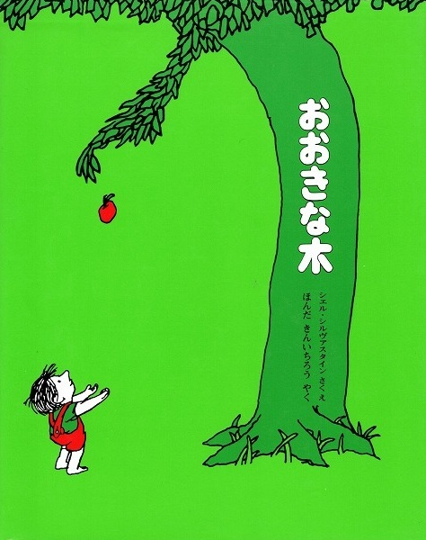

たくさんの絵本の中で たまたま読んでみて 印象に残った絵本を紹介します

ちびっこはりんごの木が好きだった、りんごの木もちびっこが好きだった。 しかし大きくなったらちびっこはやってこなくなった。 久しぶりにやってくるとほしいものをりんごの木にねだる、 それでもりんごの木はうれしかった。 そのすべてをりんごの木は与えた。 すべてがなくなり切り株だけになったりんごの木。 それでもりんごの木はうれしかった。
状態：良好（カバーあり）
価格：1,280円（税込）
在庫：1冊
ご購入をご希望の方は、お問い合わせフォームから
「書名」と「購入希望」とご記入のうえ、ご連絡ください。
在庫を確認後、送料を含めた金額をご案内いたします。
幼いころには与えたり与えられたりしながら育ったのに いつの間にか与えられることばかりになった人間。 何もなくなり切り株だけになってしまったりんごの木。 この時間の経過とやり取りの中に、求めるばかりの人間に対する何か 奥の深い反省のような教えを感じます。 同じ作品で村上春樹さんの翻訳の絵本がありますが、私はほんださんの 温かみのある翻訳のこちらの絵本が好きです。